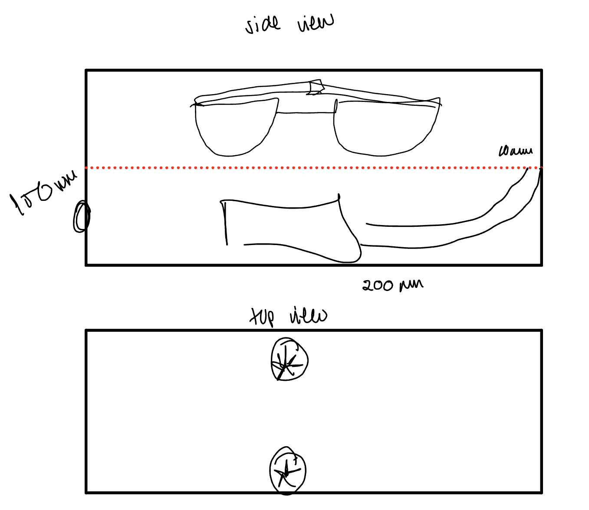
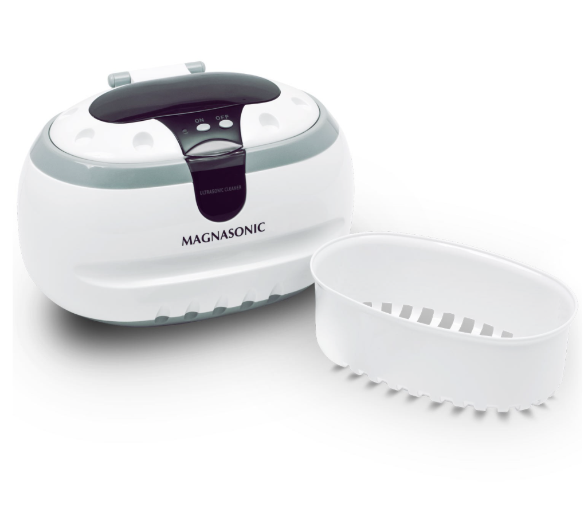

<br>
### Final Project
<br>
<strong>Glasses Cleaning Machine</strong>
<p>The idea for my final project is a glasses cleaning machine. The general vision was to leave the glasses in a case, allow them to get washed with water/solution, and eventually airdry them (Image 1). The exact vision looks more like an ultrasonic cleaner; however, I do want to be able to effectively dry them, through what I envision to be fans.</p>
<center></center>
<p>Currently, no type of cleaner with the fans exist, however the closest product to my vision is the MagnaSonic CD2800 Ultrasonic Cleaner (link).
<center></center>
<center><p>MagnaSonic Ultrasonic Cleanser Manual (link)</p></center>
<strong>Materials</strong>
<p>So far the complete materials list has foom for change, however, it consists of...
<ol>
<li>Water Pump</li>
<li>3D Printer</li>
<li>Fans (2)</li>
<li>Piezo (TBD)</li>
<li>Arduino Uno</li>
</ol>
<strong>Timeline</strong>
<ul>
<li>Jul 20th: Finish Case Prototype</li>
<li>Jul 27th: Water Pump, Setup Arduino</li>
<li>Aug 1st: Project and Finishing Touches Completed</li>
</ul>
<strong>Project Goals</strong>
<p>Overall, the creation of this project is for personal use and just the fact that I have the ability to create something like this is a goal itself, but more specifically one main goal is to make the machine fast and drying. My main uncertainties are the speed of the case and how the drying system will work. I want the machine to be fast because if I am trying to clean my glasses on a daily basis, speed is crucial. Furthermore, the fan is currently the most feasible idea for the drying, but I would have to test it out to see how feasible it is.</p>
<strong>3D Prototype</strong>
<p>For the 3D Assignment I choose to print something related to my final project, which was supposed to be the case. However, due to the long print time and uncertainity on water tightness and the snap-fit, I decided to just print a much smaller snap-fit box. This box allowed to get a better idea for how my case design would turn out and how far I can go with 3D, in regards to liquids (Week 5 link).
[Home](../index.html).